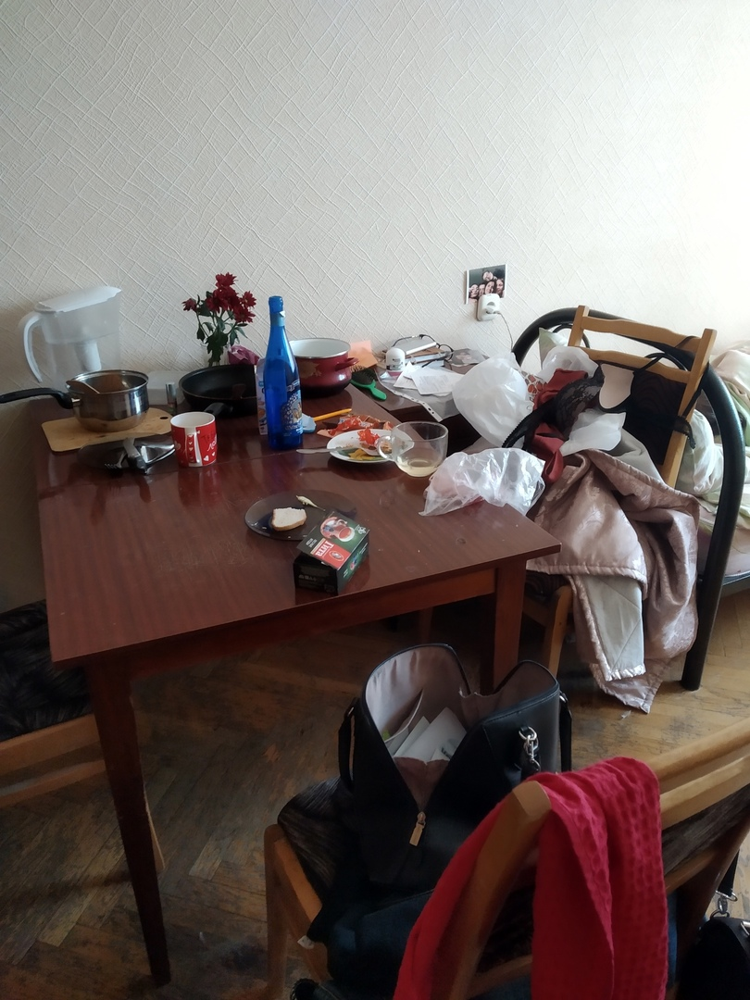
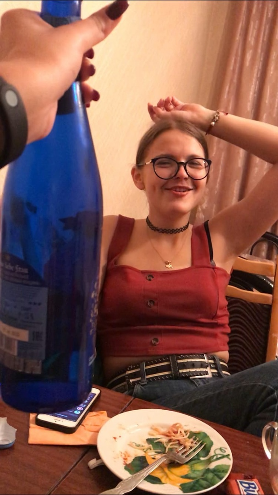
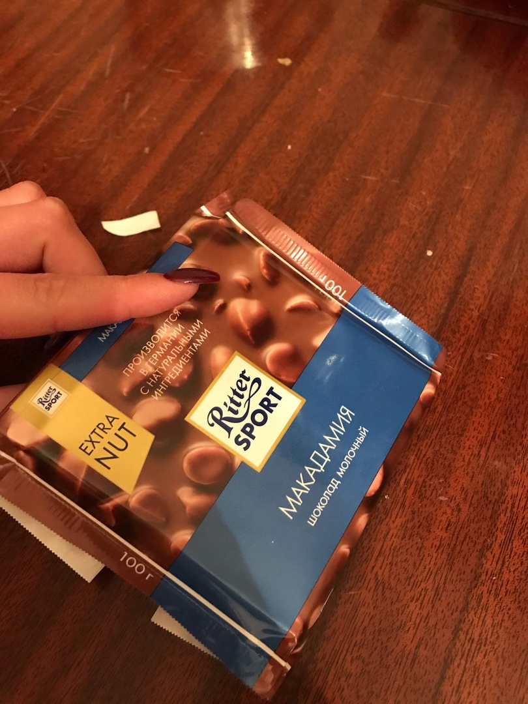
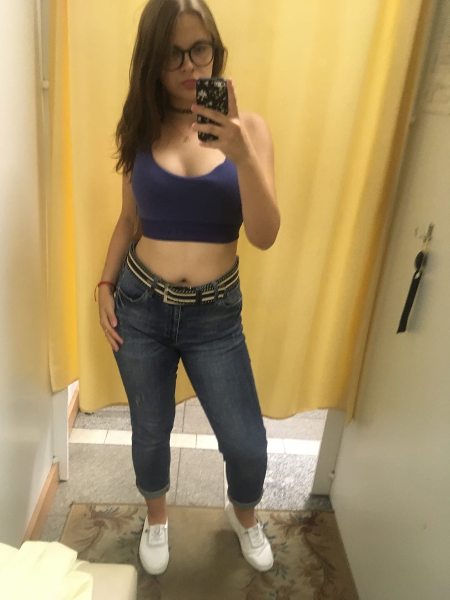

Полина очень душевный и чувственный человек, она умеет слушать и слышать, помогать словом и делом. Полина очень понимающая: захочешь ночью чипсиков поесть - увидит, посмеется, но поймет (сама по ночам ест). А главное - Полина очень любит убираться! Просто обожает...

А это немного о таком, как проходит любой вечер с Полиной

Полина - человек настроения. Вот сегодня есть у нее настроение - она делает на завтрак очень вкусные оладьи. А вот завтра нет у Полины настроения - она покупает себе на ужин очень вкусное пиво =)
Кстати про вкусные завтраки... Полина очень людит оладьи, и неважно из чего они сделаны: хоть из молока, которому уже месяц и оно превратилось в сметану.
Интересный факт: Полине можно поднять настроение одной шоколадкой или одним кусочком пиццы
Кстати о шоколадках.. Вот такой милый и неожиданный сюрприз привезла мне Полина (если б умела, вставила бы сюда смайлик сердечка)

Полина обожает спорт.. Скажите ей: "Будем бегать каждый
день в 8 утра на Немигу?" Она ответит: "Конечно будем!!!"
...........................
И на следующий день встанет в 2 часа дня.
Она будет отлкадывать с зарплаты и со стипендии
на спортивный костюм, чтобы благополучно не ходить
в нем на физру... Кстати, вот об этом спортивном топе
она мечтала весь август

Ну и в конце просто хочу сказать, что ты красотка!